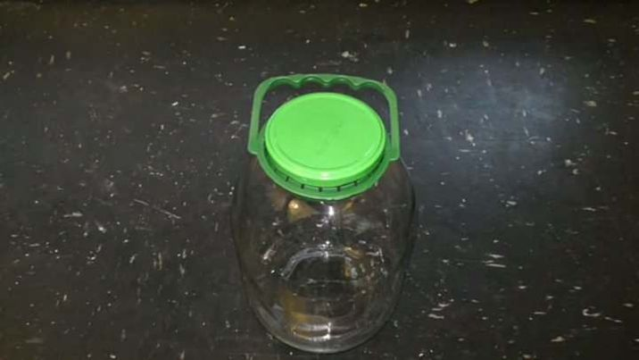
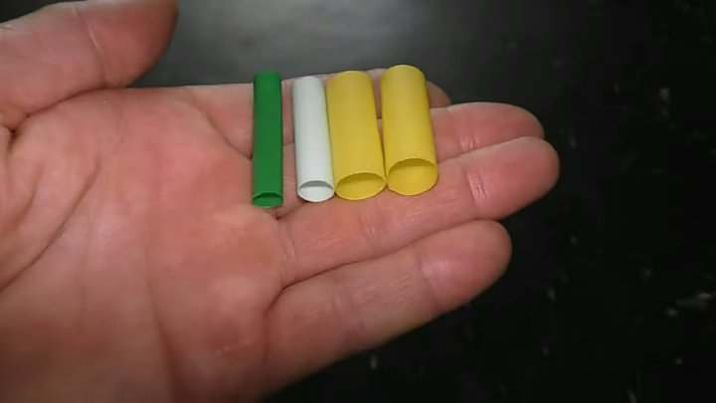
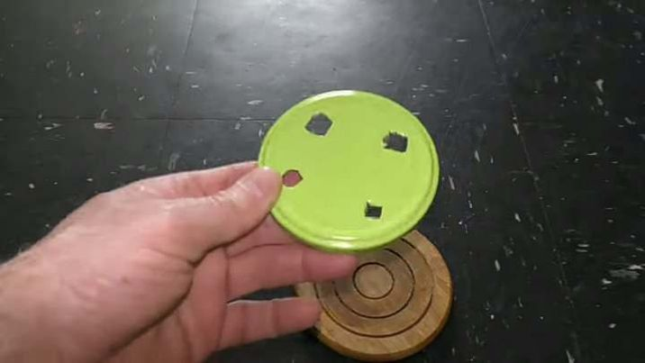
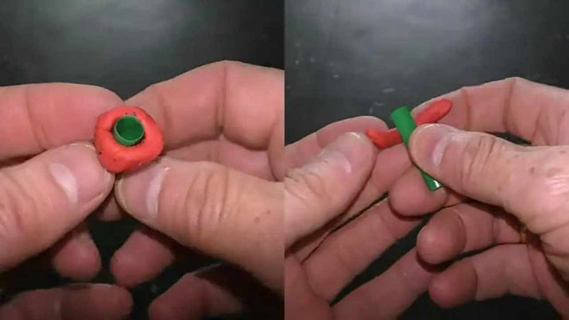
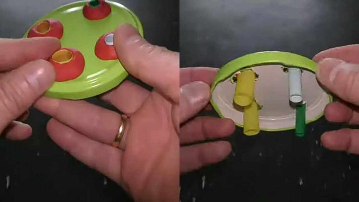
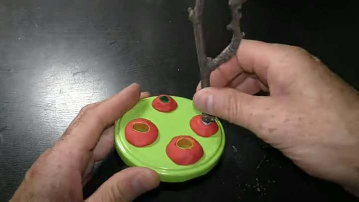
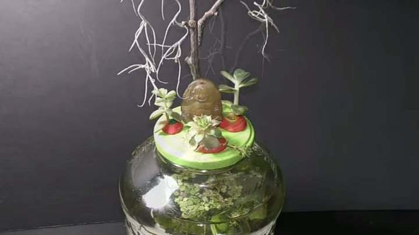

Turn empty mason jars into charming planters by adding soil and small plants or herbs. They make great additions to your kitchen windowsill or as decorative accents around the home!
STEP 1: Use a 3 liter jar with a cover in this example to make a planter for my mason jar planters
STEP 2: I use different size plastic straws. Cut a 2-3 cm long piece of straw for each hole.
STEP 3: Use a knife or whatever cutting tool you may have to cut an X for each hole in the cover. The diameter of the holes should be big enough for the stem of the plants to fit through. So, for larger plants you may need a pipe bigger than straws I prepared 4 different diameter pieces of straws all cut about 3 cm long.
STEP 4: Use plasticine to secure straws in the holes. Plasticine is waterproof and never dries. Make a ring out of plasticine.
First make a stick. Then roll the stick around the straw to make a ring. Make the ring at the end of the straw.
STEP 5:Insert the straw in the hole until the ring rests on the cover. Press the ring to the cover to seal gaps between the straw and the edge of the hole.
Fix all holes with straws in the same fashion. The cover fixed in this fashion serves as a base for the aquarium garden and it reduces water evaporation.
STEP 6: Assemble the top part of the garden. First let's add a dry branch. Trim it to a desirable size. Put the branch in one of the holes.
STEP 7: Make sure the bottom part of the branch stays above the water level. Otherwise, uncured wood will discolor water. I hang Spanish moss on the branch. It's very important to keep water level below the bottom edge of the straws.
I used a piece of plasticine and a coin to make a base for a sculpture. That's quite self-explanatory. I put the sculpture next to the branch right here in the middle of the garden. It already looks nice.
